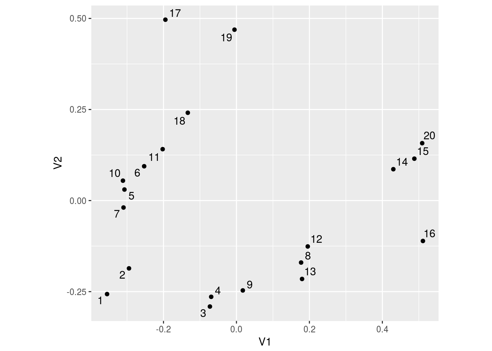
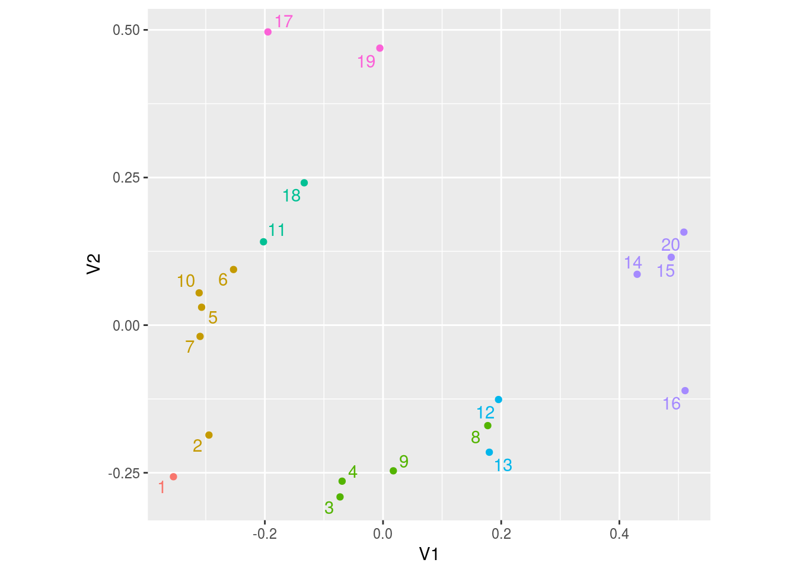

Ken ventures into community ecology
Introduction
Somebody mentioned ANOSIM to me, and I had this kind of vague recollection of it, meaning that I didn’t really understand anything of it at all. This prompted me to explore further, which got me into the vegan package.
This contains a number of functions for handling ecological community data. One of these is anosim, or “analysis of similarity”, which is used for assessing the groupings of objects when we have only a dissimilarity matrix: are the objects within a group more similar than ones in different groups? We explore ANOSIM, with a side trip via cluster analysis, because I had to connect this up with what I already knew.
packages
I need these:
library(vegan)## Loading required package: permute## Loading required package: lattice## This is vegan 2.5-1library(ggrepel)## Loading required package: ggplot2library(tidyverse)## ── Attaching packages ────────────────────────────────────────────────────────────────────────────────────── tidyverse 1.2.1 ──## ✔ tibble 1.4.2 ✔ purrr 0.2.4
## ✔ tidyr 0.8.0 ✔ dplyr 0.7.4
## ✔ readr 1.1.1 ✔ stringr 1.3.0
## ✔ tibble 1.4.2 ✔ forcats 0.3.0## ── Conflicts ───────────────────────────────────────────────────────────────────────────────────────── tidyverse_conflicts() ──
## ✖ dplyr::filter() masks stats::filter()
## ✖ dplyr::lag() masks stats::lag()The dune data
The data set dune contains cover class values of 30 different species at 20 different sites. To start with, let’s group the sites into similar ones, and ask whether those groups related to anything else.
I think this is a link to the right thing. Please correct me (in the comments) if not.
Here’s the data set:
data(dune)
dune %>% as_tibble()## # A tibble: 20 x 30
## Achimill Agrostol Airaprae Alopgeni Anthodor Bellpere Bromhord Chenalbu
## * <dbl> <dbl> <dbl> <dbl> <dbl> <dbl> <dbl> <dbl>
## 1 1.00 0 0 0 0 0 0 0
## 2 3.00 0 0 2.00 0 3.00 4.00 0
## 3 0 4.00 0 7.00 0 2.00 0 0
## 4 0 8.00 0 2.00 0 2.00 3.00 0
## 5 2.00 0 0 0 4.00 2.00 2.00 0
## 6 2.00 0 0 0 3.00 0 0 0
## 7 2.00 0 0 0 2.00 0 2.00 0
## 8 0 4.00 0 5.00 0 0 0 0
## 9 0 3.00 0 3.00 0 0 0 0
## 10 4.00 0 0 0 4.00 2.00 4.00 0
## 11 0 0 0 0 0 0 0 0
## 12 0 4.00 0 8.00 0 0 0 0
## 13 0 5.00 0 5.00 0 0 0 1.00
## 14 0 4.00 0 0 0 0 0 0
## 15 0 4.00 0 0 0 0 0 0
## 16 0 7.00 0 4.00 0 0 0 0
## 17 2.00 0 2.00 0 4.00 0 0 0
## 18 0 0 0 0 0 2.00 0 0
## 19 0 0 3.00 0 4.00 0 0 0
## 20 0 5.00 0 0 0 0 0 0
## # ... with 22 more variables: Cirsarve <dbl>, Comapalu <dbl>,
## # Eleopalu <dbl>, Elymrepe <dbl>, Empenigr <dbl>, Hyporadi <dbl>,
## # Juncarti <dbl>, Juncbufo <dbl>, Lolipere <dbl>, Planlanc <dbl>,
## # Poaprat <dbl>, Poatriv <dbl>, Ranuflam <dbl>, Rumeacet <dbl>,
## # Sagiproc <dbl>, Salirepe <dbl>, Scorautu <dbl>, Trifprat <dbl>,
## # Trifrepe <dbl>, Vicilath <dbl>, Bracruta <dbl>, Callcusp <dbl>The columns are the (abbreviated) species names, and the rows are sites.
The approved way of making dissimilarities between the sites is the Bray-Curtis distance, which is the default for vegdist:
dune.dist=vegdist(dune)
dune.dist## 1 2 3 4 5 6 7
## 2 0.4666667
## 3 0.4482759 0.3414634
## 4 0.5238095 0.3563218 0.2705882
## 5 0.6393443 0.4117647 0.4698795 0.5000000
## 6 0.6363636 0.5111111 0.5681818 0.6344086 0.2967033
## 7 0.5517241 0.4390244 0.4750000 0.5058824 0.2289157 0.2272727
## 8 0.6551724 0.5365854 0.3250000 0.4117647 0.6385542 0.5909091 0.5250000
## 9 0.6000000 0.4761905 0.3414634 0.3793103 0.5058824 0.6000000 0.4878049
## 10 0.5737705 0.2941176 0.4698795 0.4772727 0.3488372 0.3186813 0.2771084
## 11 0.5600000 0.5405405 0.5555556 0.5844156 0.6266667 0.4500000 0.4444444
## 12 0.9245283 0.7142857 0.4400000 0.5250000 0.6923077 0.6385542 0.6266667
## 13 0.8431373 0.6000000 0.4246575 0.5128205 0.6842105 0.7530864 0.6438356
## 14 1.0000000 0.7878788 0.7500000 0.7971014 0.8805970 0.8055556 0.8750000
## 15 1.0000000 0.9076923 0.7142857 0.7352941 0.8484848 0.8028169 0.8412698
## 16 0.9215686 0.8933333 0.6712329 0.6666667 0.8947368 0.8518519 0.8904110
## 17 0.8787879 0.8245614 0.8909091 0.9000000 0.6206897 0.6825397 0.6727273
## 18 0.7777778 0.5942029 0.6119403 0.6666667 0.5428571 0.4933333 0.5522388
## 19 1.0000000 0.8082192 0.8309859 0.7894737 0.7027027 0.7215190 0.7464789
## 20 1.0000000 0.9452055 0.7746479 0.7631579 0.8918919 0.8481013 0.8873239
## 8 9 10 11 12 13 14
## 2
## 3
## 4
## 5
## 6
## 7
## 8
## 9 0.3170732
## 10 0.5421687 0.6000000
## 11 0.5277778 0.5945946 0.4133333
## 12 0.4400000 0.3506494 0.7179487 0.6716418
## 13 0.3698630 0.4133333 0.7368421 0.7538462 0.3529412
## 14 0.5625000 0.7575758 0.7611940 0.8214286 0.6949153 0.6491228
## 15 0.4285714 0.6615385 0.8484848 0.7454545 0.6206897 0.6785714 0.3617021
## 16 0.4246575 0.6533333 0.8947368 0.8769231 0.5882353 0.6060606 0.5438596
## 17 0.8909091 0.8947368 0.6206897 0.7021277 0.9200000 0.8750000 0.8974359
## 18 0.6417910 0.6811594 0.4857143 0.3220339 0.7419355 0.8000000 0.8431373
## 19 0.7464789 0.7808219 0.7027027 0.5555556 0.6969697 0.8125000 0.8545455
## 20 0.4929577 0.6986301 0.8918919 0.8095238 0.6969697 0.7187500 0.4545455
## 15 16 17 18 19
## 2
## 3
## 4
## 5
## 6
## 7
## 8
## 9
## 10
## 11
## 12
## 13
## 14
## 15
## 16 0.3571429
## 17 0.8947368 1.0000000
## 18 0.7200000 0.8666667 0.7619048
## 19 0.7777778 0.9062500 0.5652174 0.5517241
## 20 0.2962963 0.3437500 0.9130435 0.6896552 0.7419355Cluster analysis
My thinking about how to analyze these sites begins with a cluster analysis to group sites into similar ones. Since we have dissimilarities, a hierarchical method like Ward’s is available:
dune.1=hclust(dune.dist,method="ward.D")
plot(dune.1)The next question is to think about an appropriate number of clusters. This tends to involve a lot of hand-waving. I dunno, four?
plot(dune.1)
rect.hclust(dune.1,4)Perhaps a better way to choose a number of clusters is to plot that thing height on the \(y\)-axis against the number of clusters, in a so-called scree plot.
h=dune.1$height
h## [1] 0.2272727 0.2705882 0.2746551 0.2941176 0.2962963 0.3170732 0.3220339
## [8] 0.3529412 0.3684965 0.4349385 0.5138554 0.5453692 0.5652174 0.5826138
## [15] 0.7323873 0.8420304 1.2254557 1.6706423 2.4312773The larger the “height” is, the more dissimilar the sites within a cluster are. These go from 20 clusters down to 2:
d=tibble(clusters=20:2,height=h)
d## # A tibble: 19 x 2
## clusters height
## <int> <dbl>
## 1 20 0.227
## 2 19 0.271
## 3 18 0.275
## 4 17 0.294
## 5 16 0.296
## 6 15 0.317
## 7 14 0.322
## 8 13 0.353
## 9 12 0.368
## 10 11 0.435
## 11 10 0.514
## 12 9 0.545
## 13 8 0.565
## 14 7 0.583
## 15 6 0.732
## 16 5 0.842
## 17 4 1.23
## 18 3 1.67
## 19 2 2.43Now plot height against clusters. It’s easiest to join the points by lines:
ggplot(d,aes(x=clusters,y=height))+geom_point()+geom_line()
The idea is that we want a relatively small height, indicating that the sites within a cluster are similar, but we also want a relatively small number of clusters, for greater insight. (You could have 20 clusters, with each site in a cluster by itself, but there would not be much insight there!). Thus we want to be towards the bottom left of the picture. We look for an “elbow” sticking out towards that corner of the graph, where the height drops by a lot and then by a little, such as at 5 or 7 clusters.
The name comes from imagining this plot to be a side-on view of a mountain, where “scree” refers to loose rock that has fallen to the bottom of the rock face. Here, we are thinking of scree as being the random rubbish at the bottom of the mountain, such as after 7 clusters. Here, we want the height to be reasonably small, so we take the number of clusters to be the first one on the scree. (This is different from using a scree plot for principal components, where we want the ordinate to be large, so we go back one from the elbow to get the last point definitely on the mountain.)
I’m going with seven clusters, though I could as well have picked five. How does seven clusters look on the dendrogram?
plot(dune.1)
rect.hclust(dune.1,7)Then we can eyeball the data for two sites in the same cluster, such as sites 11 and 18 in our third cluster:
dune %>% slice(c(11,18)) %>% print(width=Inf)## # A tibble: 2 x 30
## Achimill Agrostol Airaprae Alopgeni Anthodor Bellpere Bromhord Chenalbu
## <dbl> <dbl> <dbl> <dbl> <dbl> <dbl> <dbl> <dbl>
## 1 0 0 0 0 0 0 0 0
## 2 0 0 0 0 0 2.00 0 0
## Cirsarve Comapalu Eleopalu Elymrepe Empenigr Hyporadi Juncarti Juncbufo
## <dbl> <dbl> <dbl> <dbl> <dbl> <dbl> <dbl> <dbl>
## 1 0 0 0 0 0 2.00 0 0
## 2 0 0 0 0 0 0 0 0
## Lolipere Planlanc Poaprat Poatriv Ranuflam Rumeacet Sagiproc Salirepe
## <dbl> <dbl> <dbl> <dbl> <dbl> <dbl> <dbl> <dbl>
## 1 7.00 3.00 4.00 0 0 0 2.00 0
## 2 2.00 3.00 3.00 0 0 0 0 3.00
## Scorautu Trifprat Trifrepe Vicilath Bracruta Callcusp
## <dbl> <dbl> <dbl> <dbl> <dbl> <dbl>
## 1 5.00 0 3.00 2.00 4.00 0
## 2 5.00 0 2.00 1.00 6.00 0We get the impression that these sites have very similar cover class values. A lot of the species are absent at both sites, and where they are present, they tend to have similar values. Contrast that with sites in different clusters, such as sites 16 and 17:
dune %>% slice(c(16,17)) %>% print(width=Inf)## # A tibble: 2 x 30
## Achimill Agrostol Airaprae Alopgeni Anthodor Bellpere Bromhord Chenalbu
## <dbl> <dbl> <dbl> <dbl> <dbl> <dbl> <dbl> <dbl>
## 1 0 7.00 0 4.00 0 0 0 0
## 2 2.00 0 2.00 0 4.00 0 0 0
## Cirsarve Comapalu Eleopalu Elymrepe Empenigr Hyporadi Juncarti Juncbufo
## <dbl> <dbl> <dbl> <dbl> <dbl> <dbl> <dbl> <dbl>
## 1 0 0 8.00 0 0 0 3.00 0
## 2 0 0 0 0 0 2.00 0 0
## Lolipere Planlanc Poaprat Poatriv Ranuflam Rumeacet Sagiproc Salirepe
## <dbl> <dbl> <dbl> <dbl> <dbl> <dbl> <dbl> <dbl>
## 1 0 0 0 2.00 2.00 0 0 0
## 2 0 2.00 1.00 0 0 0 0 0
## Scorautu Trifprat Trifrepe Vicilath Bracruta Callcusp
## <dbl> <dbl> <dbl> <dbl> <dbl> <dbl>
## 1 0 0 0 0 4.00 3.00
## 2 2.00 0 0 0 0 0This time, a lot of species are present at one site but not at the other, marking the sites as dissimilar.
Let’s save the cluster memberships for later use:
dune_cluster=cutree(dune.1,7)
dune_cluster## 1 2 3 4 5 6 7 8 9 10 11 12 13 14 15 16 17 18 19 20
## 1 2 3 3 2 2 2 3 3 2 4 5 5 6 6 6 7 4 7 6More about the sites
The data set dune.env contains some other information about the sites:
data("dune.env")
dune.env %>% as_tibble()## # A tibble: 20 x 5
## A1 Moisture Management Use Manure
## * <dbl> <ord> <fct> <ord> <ord>
## 1 2.80 1 SF Haypastu 4
## 2 3.50 1 BF Haypastu 2
## 3 4.30 2 SF Haypastu 4
## 4 4.20 2 SF Haypastu 4
## 5 6.30 1 HF Hayfield 2
## 6 4.30 1 HF Haypastu 2
## 7 2.80 1 HF Pasture 3
## 8 4.20 5 HF Pasture 3
## 9 3.70 4 HF Hayfield 1
## 10 3.30 2 BF Hayfield 1
## 11 3.50 1 BF Pasture 1
## 12 5.80 4 SF Haypastu 2
## 13 6.00 5 SF Haypastu 3
## 14 9.30 5 NM Pasture 0
## 15 11.5 5 NM Haypastu 0
## 16 5.70 5 SF Pasture 3
## 17 4.00 2 NM Hayfield 0
## 18 4.60 1 NM Hayfield 0
## 19 3.70 5 NM Hayfield 0
## 20 3.50 5 NM Hayfield 0Details about this are in the help for dune. The column of interest to us is Management. This describes the type of farming done at the site, with labels:
- BF: biological farming
- HF: hobby farming
- NM: nature conservation management
- SF: standard farming
We might be concerned with any relationship between farming type and species cover profile. This is what ANOSIM can look at, but before that we’ll think about using our cluster analysis to assess this issue.
Farming type and cluster analysis
A way to look for a relationship here is to ask whether sites in the same cluster tend to have the same farming type. I can think of two ways to do that. One way is to make a crosstabulation of cluster and farming type:
tab=table(farming=dune.env$Management,cluster=dune_cluster)
tab## cluster
## farming 1 2 3 4 5 6 7
## BF 0 2 0 1 0 0 0
## HF 0 3 2 0 0 0 0
## NM 0 0 0 1 0 3 2
## SF 1 0 2 0 2 1 0Clusters 6 and 7 seem to contain mostly the non-farmed sites. With these small frequencies, it’s kind of absurd to do a test, but just for fun:
chisq.test(tab)## Warning in chisq.test(tab): Chi-squared approximation may be incorrect##
## Pearson's Chi-squared test
##
## data: tab
## X-squared = 29.867, df = 18, p-value = 0.03876We have way too many small frequencies to take this P-value seriously, though it is significant.
A second way to use the cluster analysis is to re-draw the dendrogram, but instead of using the site numbers to identify the sites, label them by the kind of farming done there:
plot(dune.1,labels=dune.env$Management)
rect.hclust(dune.1,7)There seems to be some grouping here: the clusters each only contain one or two of the farming types. This is really the same information as in the cross-tabulation, but presented in a different way. (The clusters are not ordered by cluster number across the page.)
Analysis of similarity
I used the cluster analysis as a stepping-stone to figure out which sites were “similar” to each other. However, this is really losing information about similarity, because it boils down the actual numbers in the dissimilarity matrix into a yes/no: two sites are either in the same cluster or not. It seems better to use the actual dissimilarities in an analysis. This avoids arbitrary choices about the number of clusters to use; if I had used, say, three clusters instead of seven, the story would have been different.
This is where Analysis of Similarity comes in. It is like analysis of variance, in that it tests whether pre-determined groups are similar to each other or different, but instead of using observations from each of the groups, it uses dissimilarities between observations within and between groups. The anosim function takes a dissimilarity matrix and a column containing the grouping. It does a permutation test to obtain a P-value:
dune.2=anosim(dune.dist,dune.env$Management)
dune.2##
## Call:
## anosim(x = dune.dist, grouping = dune.env$Management)
## Dissimilarity: bray
##
## ANOSIM statistic R: 0.2579
## Significance: 0.013
##
## Permutation: free
## Number of permutations: 999This is significant, so we deduce that sites farmed in the same way have similar cover class profiles. This ought to be more powerful than the (not very believable) chi-squared test based on the cluster analysis.
Using anosim on the clusters
anosim is supposed to be used on pre-determined groups, but the clusters in cluster analysis are formed by looking at the same data as the anosim will be run on, which is likely to be biased: the clusters are found to make them as different as possible from one another, and this does not address the question of how reproducible the clusters might be.
However, there is nothing stopping us from running anosim using the clusters as if they were known groups, to see what happens:
anosim(dune.dist,dune_cluster)##
## Call:
## anosim(x = dune.dist, grouping = dune_cluster)
## Dissimilarity: bray
##
## ANOSIM statistic R: 0.9265
## Significance: 0.001
##
## Permutation: free
## Number of permutations: 999Very significant indeed. (We should probably do some kind of cross-validation here to get a P-value we can trust, but I leave that aside.)
Ordination, or multidimensional scaling
Another thing community ecologists do is called “ordination”. I call it “multidimensional scaling”. Anyway, the idea is to use dissimilarities to draw a two-dimensional picture of the sites (here) so that similar ones are close together. This uses the dissimilarities that we calculated earlier. The base function cmdscale tries to place the individual sites in two dimensions so as to best reproduce the dissimilarities as distances on the graph.
dune.scale=cmdscale(dune.dist,eig=T)
dune.scale$GOF## [1] 0.5601833 0.5961463The goodness-of-fit measure is like R-squared. I don’t know why there are two values, but I’m calling this acceptably high.
dune.scale contains points, a matrix with \(x\) and \(y\) coordinates for plotting. I would make the plot using ggplot by first constructing a data frame with the coordinates and identifiers for the locations, thus:
“Vegan” also has functions for making and plotting ordinations, perhaps more in line with how community ecologists are used to seeing them. I couldn’t get my head around how the species appeared on the plot from “ordiplot”.
When you turn a matrix with nameless columns into a “tibble”, the columns acquire names V1, V2, etc.
The sites are identified by number in the row names of “dune”. This technique would also work if the sites had names stored in the row names of the data frame.
as_tibble(dune.scale$points) %>%
rownames_to_column("site") %>%
ggplot(aes(x=V1,y=V2,label=site))+
geom_point()+geom_text_repel()+coord_fixed()
The “coord_fixed” is to make both axes have the same scale, so that distances are properly mapped.
This is perhaps better than the cluster analysis because it doesn’t force somewhat dissimilar sites to be in the same cluster; it lets the consumer of the graph decide the extent to which sites are similar or not.
There do seem to be some groups of similar sites. A tweak to our code lets us see how these correspond to our clusters from earlier:
Code notes: I (i) added the cluster identifiers to the data frame I created, as a factor, (ii) added them to the plot using colour, (iii) got rid of the legend, since I don’t care about which cluster is which.
Yes, I forgot the “as.factor” the first time, so that all my points were in varying shades of blue.
as_tibble(dune.scale$points) %>%
rownames_to_column("site") %>%
mutate(cluster=as.factor(dune_cluster)) %>%
ggplot(aes(x=V1,y=V2,colour=cluster,label=site))+
geom_point()+geom_text_repel()+coord_fixed()+guides(colour=F)
Not bad at all. The clusters are mostly distinct, though site 2 ought to be in the same cluster as site 1, and site 8 ought to be in the cluster with sites 12 and 13. Having seven clusters, one of the suggestions from our scree plot, does seem to make sense.
As a final flourish, we could add the farming methods to this plot instead of the clusters. This time, having the legend is helpful:
as_tibble(dune.scale$points) %>%
rownames_to_column("site") %>%
mutate(farming=dune.env$Management) %>%
ggplot(aes(x=V1,y=V2,colour=farming,label=site))+
geom_point()+geom_text_repel()+coord_fixed()There is definitely some grouping, but it is not as clear as for the clusters.